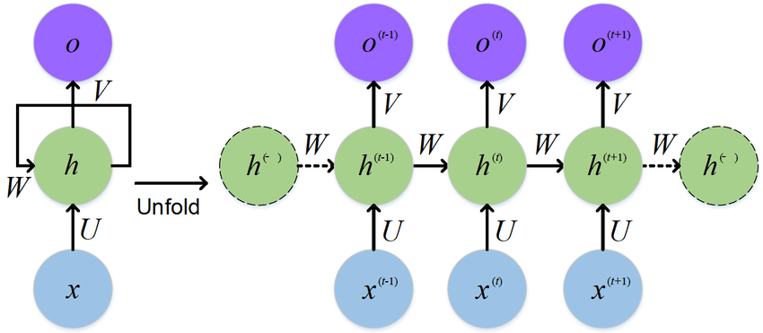
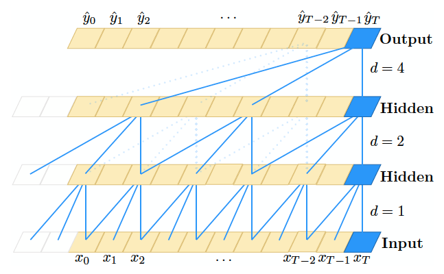
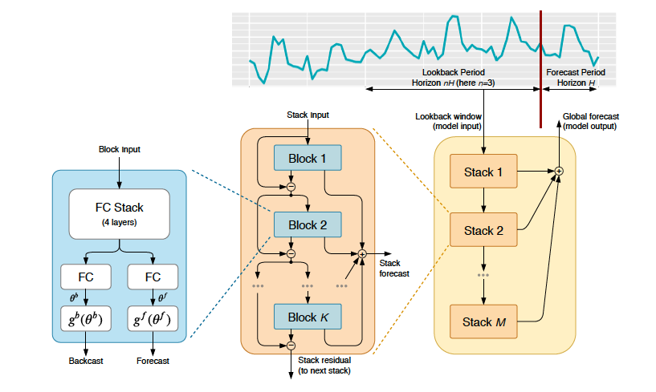
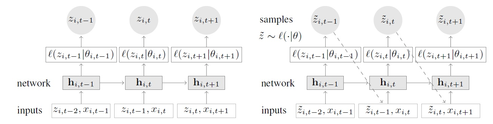
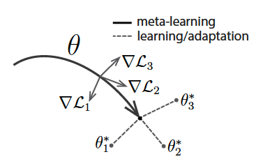
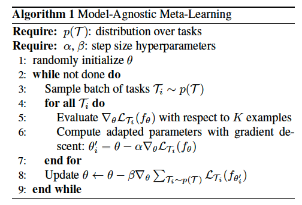

时间序列，是一组按照时间发生顺序而排列的数据序列。而时序预测，则是对这些数据序列关于未来一段时间的预测。根据预测标的的数目和性质，我们可以把预测标的分为以下三类：
- 单条时序，如小明在某段时间内的银行余额流水
- 多条且有一定相关性的时序，如小明及其家人某段时间内的银行余额流水
本Survey将根据预测标的为总分类标准，介绍常用的及较为sota的时序预测算法。
1. 单条序列的时序预测算法
对于单条时序的预测，根据模型学习方法的性质，基本可以分为两大类：
- 基于统计的算法
- 基于学习的算法
1.1 基于统计的算法
基于统计的算法大多为传统的时序预测算法，常用的算法有：
- 泛ARIMA类
- 泛指数平滑类（ETS）
- 基于时序分解-预测-合成的算法
1.1.1 泛ARIMA类
在介绍ARIMA之前，先要了解一下ARMA模型。ARMA模型是集自回归模型(Auto-Regressive, AR)和移动平均模型(Moving Average, MA)于一体，针对平稳序列的预测算法。而序列的平稳性是指序列的方差不会随时间的推移而产生大幅度的变化。
序列的平稳性：指序列的方差不会随时间的推移而产生大幅度的变化
自回归模型(Auto-Regressive, AR)：基于预测标的历史数据的组合的预测
- $p$阶的AR模型的公式
移动平均模型(Moving Average, MA): 基于历史预测误差的组合的预测
- $q$阶的MA模型公式为：
ARMA模型
- 一个$p$阶AR，$q$阶MA的ARMA模型( ARMA(p,q) )公式为：其中$y_{t-i}$是历史序列，$e_{t-i}$是历史预测误差，$c$是常数项。
ARIMA模型
可是由于现实世界中，大部分时序数据是非平稳的，不符合ARMA模型的假设前提，所以，学者们引入差分来消除序列的非平稳性，而兼顾AR、差分、MA的模型就是我们通常所说的ARIMA模型
- 差分：
- 一阶差分公式：$y’_t=y_t-y_{t-1}$
- 二阶差分公式：$y’’_t = y’_t - y’_{t-1}$
- $d$阶差分公式：$y^d_t = y^{d-1}_t - y^{d-1}_{t-1}$
- 季节性差分：$y’_t = y_t - y_{t-m}, m为一年内的季节数量$
- 一个$p$阶AR，$d$阶差分，$q$阶MA的ARIMA模型( ARIMA(p, d, q) )的推算流程：
- 把原序列$d$阶差分后得到差分序列
- 用ARMA模型对差分序列进行拟合，得出预测值
- 对预测值进行逆差分，还原到原序列的序列空间，得出最终的预测值
- 若想消除季节性对序列的影响，可以先把原序列进行季节性差分，然后按照ARIMA模型推算流程进行演算。这也是我们通常所说的季节性ARIMA模型(SARIMA)。
ARIMAX模型
ARIMAX模型是在ARIMA模型的基础上加入了同期特征值对预测结果的影响，使得模型内的因子不局限于历史数据和历史预测误差。
python开源算法包：pmdarima
1.1.2 泛指数平滑类(ETS)
指数平滑模型的思路是将过去的预测值的加权平均，且其权重随着当前时间里观测时间的距离增加而发生指数型的衰减。指数平滑有以下三种形式：
- 一次指数平滑：针对没有趋势和季节性的序列
二次指数平滑：针对有趋势但没季节性的序列
三次指数平滑（Holt-Winters 季节性方法）：针对既有趋势又有季节性的序列
一次指数平滑
一次指数平滑也称简单指数平滑(SES)，其思路是利用历史的预测值来做预测，可权重是呈指数衰减变化的，其公式为：
二次指数平滑
二次指数平滑相比于一次指数平滑多了对于趋势的考量。趋势($b_t$)其实可以理解为斜率或着动量。其公式为：
三次指数平滑
三次指数平滑也称Holt-winters方法，相较于二次指数平滑多了季节性($s_t$)的考量，季节性可以理解为在每个固定间隔的时间段重复的模式，而这个固定的时间间隔成为季节，其长度用$m$来表示。三次指数平滑有两种形式，其区别是每个分量的叠加方法，可分为加法模型和乘法模型。
加法模型：
乘法模型：
ETS python算法包: statsmodels.tsa.ExponentialSmoothing
1.1.3 基于时序分解-预测-合成的算法
此类方法的思路是将原序列分解为几个分量序列，再对每个分量序列预测，预测后把结果按照逆分解的方法合成回去，从而得到原序列的预测结果。
- 分解：
- 常用的分解方法有：
- STL(Seasonal and Trend decomposition using Loess)：此方法能把序列分解为趋势项，季节项， 残差项，因此可解释性较强。[Python：statsmodels.tsa][https://www.statsmodels.org/stable/generated/statsmodels.tsa.seasonal.STL.html#statsmodels.tsa.seasonal.STL]
- EMD(Empirical Mode Decomposition)：此方法能把序列分解为数个IMF分量序列和残差，每个IMF分量都是平稳的，且残差代表着长期趋势。此方法过往广泛应用于海洋科学和地质科学中，后逐渐在经济领域中流行。Python: pyemd
- 常用的分解方法有：
预测：在预测阶段可以使用各种预测方法进行预测
合成：根据分解方法的原理将各分量的预测结果合成到原序列空间中
1.2 基于学习的算法
基于学习的时序预测算法泛指一些基于机器学习/深度学习的时序预测算法。在使用基于学习的算法时，通常会把时序问题转化为监督学习的回归问题来看待。常用的及较为sota的算法有：
集成树模型类：XGBoost、LightGBM等
- 集成树模型的主要思路是不断生成决策树去拟合上一轮的预测误差。因为模型的由一系列的决策树组成的，所以这类模型具有很强的可解释性。
- 优点：
- 可解释性强
- 可以引入同期的特征变量改善预测效果
- 缺点：
- 由于是监督学习的回归问题，所以需要决定模型的输入变量中含有引入多少个历史的观测值，并且这一步骤起着决定性的作用
- 训练所需的数据量较传统的时序预测方法要大
- 不能进行多步预测，一次只能预测一个时间点
神经网络类：RNN/GRU/LSTM/TCN/N-BEATS等
以循环神经网络为主：RNN/GRU/LSTM

循环神经网络因其在预测时会利用包含时间状态的hidden state而广泛应用于时序预测问题上，现已成为深度学习中解决时序预测问题的重要工具之一。
时空卷积网络：TCN（Temporal Convolution Network）

2018年，Bai等人提出了TCN网络。实质上，TCN是CNN的变形，主要思路是以一维的CNN做卷积且加上skip connection的机制，从而起到自动提取时间特征的作用，相关论文中TCN的表现已经与其他循环神经网络模型的相当，甚至更加出色。并且因其卷积的性质，TCN训练速度更胜一筹。Read the paper | Github
N-BEATS

N-BEATS是基于统计模型+深度网络的模型，利用多个残差block的堆叠实现对时序的拟合。N-BEATS根据block中$g^b$和$g^f$的选择可分成generic架构和interpretable架构，其中interpretable架构里有趋势模式和季节模式。使用者也可根据问题的需要自行设计$g^b$和$g^f$。Read the paper |Github
- 此类方法的优缺点：
- 优点：能够拟合非常复杂的pattern以及能够加入同期的特征值，并且特征值不用进行过多的特征工程
- 缺点：训练所需的数据量大，超参对模型表现的影响很大；训练时间较长；需要决定模型的输入变量中含有引入多少个历史的观测值，并且这一步骤起着决定性的作用
时序分解+机器学习：Facebook-prophet
prophet的提出是基于Facebook的业务场景，由于FB有着大量的以时间为维度的社交数据（如每天发博文的数量），并且社交数据与节假日强相关，所以FB提出了一个基于时序分量的深度学习模型，利用机器学习的方法分别利用对季节项，趋势项，剩余项进行建模和拟合。并且此方法已是工业级的应用了。Read the paper |Github
- 优点：工业级的时序预测算法；对节假日因素敏感；可加入同期的特征值；有较好的可解释性；模型训练耗时少；
- 缺点：只支持日维度以上的数据；Python库的安装较为复杂，容易引起依赖问题；
概率模型类：DeepAR等

DeepAR模型是由Amazon提出的，基于循环神经网络的自回归模型，值得注意的是，模型输出的是对预测值的概率分布，这在实际应用中有着非常强的实用性。Read the paper | Python: gloun-ts
- 优缺点：
- 优点：输出是概率分布，具有较强的实用性；号称可以学习到全局模型，可以使得某些有少量历史数据的item可能“cold start”；
- 缺点：训练耗时长；需要大量的训练数据；算法未从gluon-ts包脱离，较难单独使用；
其实DeepAR号称可以学习全局模型，其实就是把所有item的数据作为整体训练而已
- 优缺点：
1.3 两类方法的实操建议
短期预测与长期预测的模型选择
其实笔者在实际使用时发现，对于短期的预测，大多数基于学习的模型的表现比基于统计的模型要好；而对于长期预测的话，其实大多数基于学习的模型的效果并不好，反而基于统计的模型效果还不错。
短时序和长时序的模型选择
基于统计的模型在短时序的效果往往比基于学习的模型要好
2. 基于多条序列的预测算法
在实际问题中，我们要预测的往往是多条具有一定相关性的序列，此时可以通过模型来习得序列间的相关性/共性，从而改善在单序列的预测精度。常用的算法有：
VAR （Vector Auto-Regressive）：
- VAR是一个基于统计的预测算法，主要思路是把不同时序的观测值当作变量纳入到当前时序的预测中，已在计量经济学上广泛使用。不过，VAR的假设前提是所有序列是平稳的。
一个有两个变量的VAR(1)模型（1表示只关心前一个时间点会对预测结果造成影响）的公式为：
优缺点：
- 优点：模型简单，能快速训练；可解释性强；
- 缺点：无法学习非线性关系；对时序的要求是平稳序列；
- Python: statsmodels.tsa.vector_ar
基于矩阵分解的算法：MOAR，BHT-ARIMA
基于矩阵分解的算法的主要思路是，把多条时序的数据当作矩阵，利用了矩阵分解的技术，提取有效特征，再在特征维度上做预测，然后把预测结果转回原始的时序空间中，得到多条时序的预测结果。并且，由于是采用矩阵分解的技术同时对多条时序提取特征，所以在多时序的预测中，不用单独对单时序进行建模，其训练时间远低于其他时序预测算法。
- MOAR：Jing等人在2018年提出的基于Tucker分解和自回归模型（AR）的多时序预测算法。通过tucker分解提取出特征分量，再用AR模型对特征分量进行预测，然后将预测的特征分量逆转回时序空间中，得出预测结果。Read the paper
BHT-ARIMA：Shi等人受到MOAR算法的启发，在2019年提出了基于Tucker分解、多路延迟嵌入（MDT）和ARIMA的多时序预测算法BHT-ARIMA。BHT-ARIMA算法相比于MOAR算法更能处理非平稳序列，并且在预测特征分量的时候引入了ARIMA算法，大大的提高了预测精度。Read the paper |Github
优缺点：
- 优点：在需要同时预测多条序列的场景下，训练时间极短；能够通过矩阵分解的方式提取序列间的相关信息；
- 缺点：不能加入同期的特征改善预测效果；不能学习到序列间存在较为复杂的模式；
基于联合学习/元学习：MAML框架下的预测算法

元学习（Meta-learning）解决的是学习如何学习的问题。当我们通过许多异质的先验知识学习到元学习模型后，我们用少许的本问题的训练数据对元模型进行再训练，就能对本问题有很好的学习效果。

MAML(Model-Agnosticc Meta-Learning)是元学习中里程碑式的算法框架，其主要思想是通过学习梯度的梯度来学习到元知识。众所周知，神经网络大部分是通过梯度下降来收敛网络中的权重的，我们暂且把梯度下降理解成学习的行为。MAML框架设置了内外两层循环，外循环是用于获得学习异质数据时产生的梯度信息，而内循环是用于求这些梯度信息的梯度（可以理解为学习如何学习这些异质数据）。
而MAML其实是与模型无关的，只有我们把模型换成时序预测模型，就能实现基于元学习的时序预测，当然，模型必须是神经网络模型，否则MAML无法学习到“梯度的梯度”。例如，把MAML和LSTM、TCN、N-BEATS结合起来。Read the paper | Github
- 优缺点：
- 优点：能通过异质的数据学习到公共模式；可以解决cold start的问题；泛化能力强且不受模型约束；
- 缺点：训练时间久；需要对超参进行调优；模型表现不太稳定；